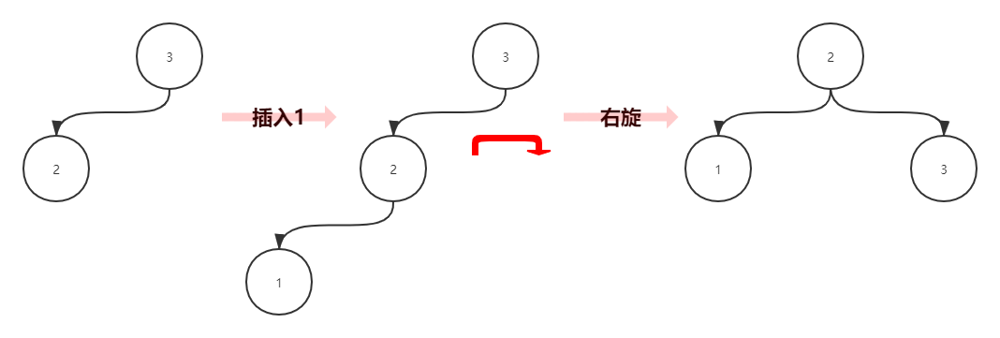
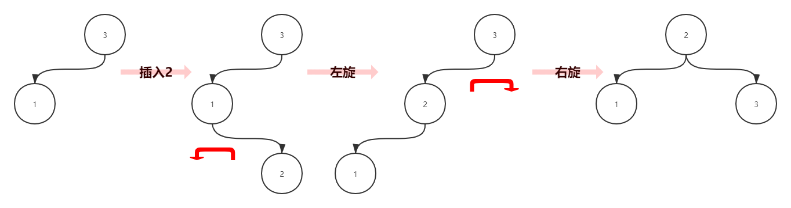
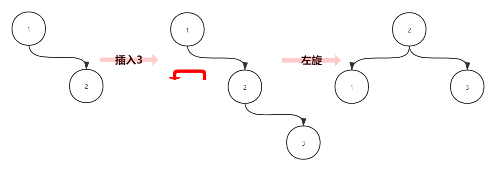
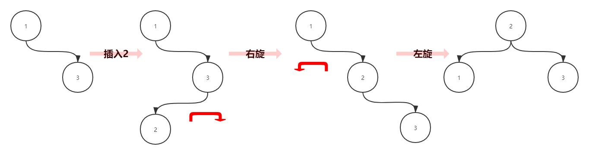

AVL树
AVL树在线动画：
https://www.cs.usfca.edu/~galles/visualization/AVLtree.html
介绍
AVL 树（Self-balancing binary search tree）就是最早被提出的自平衡二叉搜索树，它是由两名俄国的科学家（G. M. Adelson-Velsky 和 E. M. Landis）提出。
AVL树具有以下性质：它是一棵空树或它的左右两个子树的高度差的绝对值不超过1，并且左右两个子树都是一棵平衡二叉树。
破坏平衡性的四种情况
LL型
原因：
头节点 ROOT 的左儿子 L 的左儿子 LL 导致平衡被打破
解法：
- 对头节点
ROOT进行一次右旋，即可恢复平衡
举个栗子：
依次插入数字：3 -> 2 -> 1，当插入数字1时，平衡性被破坏（头节点左子树高度2，右子树高度0，相差>1）

LR型
原因：
头节点 ROOT 的左儿子 L 的右儿子 LR 导致平衡被打破
解法：
将孙子节点
R移至头节点，即可恢复平衡
- 对左儿子
L进行一次左旋 - 对头节点
ROOT进行一次右旋，即可恢复平衡
举个栗子：
依次插入数字：3 -> 1 -> 2，当插入数字2时，平衡性被破坏（头节点左子树高度2，右子树高度0，相差>1）

LL + LR型
解法同LL型
举个栗子：
如下所示，删除节点J后，A的左儿子B的 左儿子D（LL型） 和 右儿子E（LR型） 导致平衡被打破
此时，A的左子树高度3，右子树高度1，相差>1
对节点A进行一次右旋，即可恢复平衡

RR型
原因：
头节点 ROOT 的右儿子 R 的右儿子 RR 导致平衡被打破
解法：
- 对头节点
ROOT进行一次左旋，即可恢复平衡
举个栗子：
依次插入数字：1 -> 2 -> 3，当插入数字3时，平衡性被破坏（头节点左子树高度0，右子树高度2，相差>1）

RL型
原因：
头节点 ROOT 的右儿子 R 的左儿子 RL 导致平衡被打破
解法：
将孙子节点
L移至头节点，即可恢复平衡
- 对右儿子
R进行一次右旋 - 对头节点
ROOT进行一次左旋，即可恢复平衡
举个栗子：
依次插入数字：1 -> 3 -> 2，当插入数字2时，平衡性被破坏（头节点左子树高度0，右子树高度2，相差>1）

RR + RL型
解法同RR型，栗子参考
LL + LR型
Comments